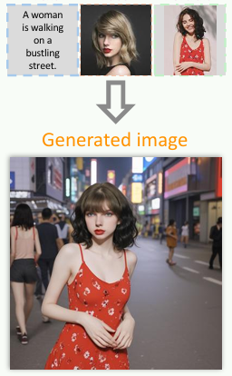
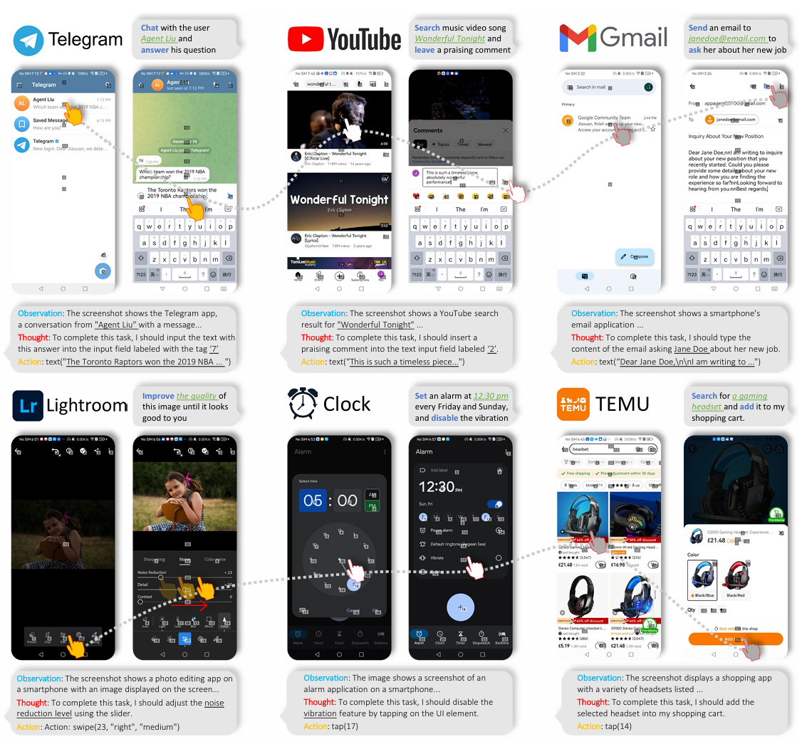
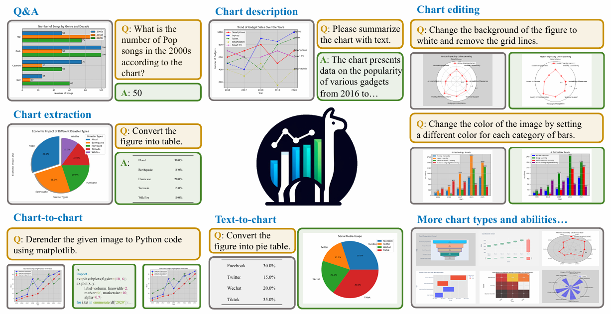
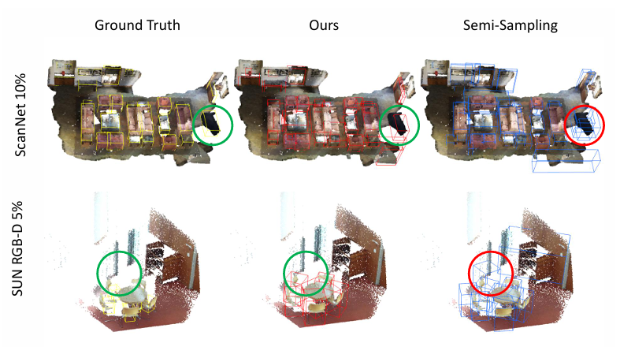
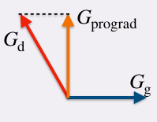

|
Yucheng Han I graduated from Tsinghua University in 2021. Now I am a fourth year Ph.D. student at Nanyang Technological University advised by Professor Hanwang Zhang. Recently I work as an intern advised by Gang Yu. I mainly focus on computer vision. I can be contacted using email yucheng002@e.ntu.edu.sg. |
{kind=link}
ResearchI'm interested in generative AI recently. I have some experiences in Image Editing, Multi-modal Large Language Model, 3D object detection, prompt learning, and video summarization. . |
 |
Step1X-Edit: A Practical Framework for General Image Editing
Shiyu Liu, Yucheng Han, Peng Xing, Fukun Yin, Rui Wang, Wei Cheng, Jiaqi Liao, Yingming Wang, Honghao Fu, Chunrui Han, Guopeng Li, Yuang Peng, Quan Sun, Jingwei Wu, Yan Cai, Zheng Ge, Ranchen Ming, Lei Xia, Xianfang Zeng, Yibo Zhu, Binxing Jiao, Xiangyu Zhang, Gang Yu, Daxin Jiang arXiv, 2024 project page / arXiv Combining the most recent VLM and in-house DiT, we open-source an image-editing model that could compare with closed-source image-editing models. |
|  |
EMMA: Your Text-to-Image Diffusion Model Can Secretly Accept Multi-Modal Prompts
Yucheng Han*, Rui Wang*, Chi Zhang*, Juntao Hu, Pei Cheng, Bin Fu, Hanwang Zhang arXiv, 2024 project page / arXiv EMMA, a novel model based on ELLA, enhances the capability of multi-modal conditioned image generation by a unique perceiver resampler. It maintains fidelity and detail in generated images, and follows text instructions at the same time, proving an effective solution for diverse multi-modal conditional image generation tasks. |
|  |
AppAgent: Multimodal Agents as Smartphone Users
Chi Zhang*, Zhao Yang*, Jiaxuan Liu*, Yucheng Han, Xin Chen, Zebiao Huang, Bin Fu, Gang Yu arXiv, 2024 project page / arXiv This paper introduces a novel LLM-based multimodal agent framework designed to operate smartphone applications. The framework enables the agent to operate smartphone applications through a simplified action space, mimicking human-like interactions such as tapping and swiping. |
|  |
ChartLlama: A Multimodal LLM for Chart Understanding and Generation
Yucheng Han*, Chi Zhang*, Xin Chen, Xu Yang, Zhibin Wang, Gang Yu, Bin Fu, Hanwang Zhang arXiv, 2024 project page / arXiv This paper propose an instruction-following dataset construction method for chart figures and finetune a LLaVA-1.5-13B to comprehend and generate chart figures. |
|  |
Dual-Perspective Knowledge Enrichment for Semi-Supervised 3D Object Detection
Yucheng Han, Na Zhao*, Weiling Chen, Keng Teck Ma, Hanwang Zhang AAAI, 2024 project page / arXiv A novel Dual-Perspective Knowledge Enrichment approach named DPKE for semi-supervised 3D object detection. DPKE enriches the knowledge of limited training data, particularly unlabeled data, from data-perspective and feature-perspective. |
|  |
Prompt-aligned Gradient for Prompt Tuning
Beier Zhu, Yulei Niu, Yucheng Han, Yue Wu, Hanwang Zhang ICCV, 2023 project page / arXiv We present Prompt-aligned Gradient, dubbed ProGrad, to prevent prompt tuning from forgetting the the general knowledge learned from VLMs. In particular, ProGrad only updates the prompt whose gradient is aligned (or non-conflicting) to the "general direction", which is represented as the gradient of the KL loss of the pre-defined prompt prediction. |